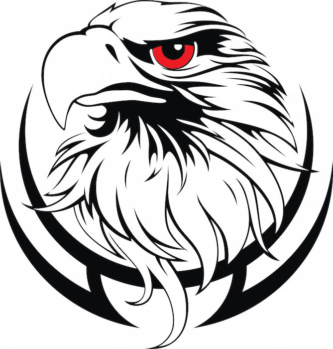
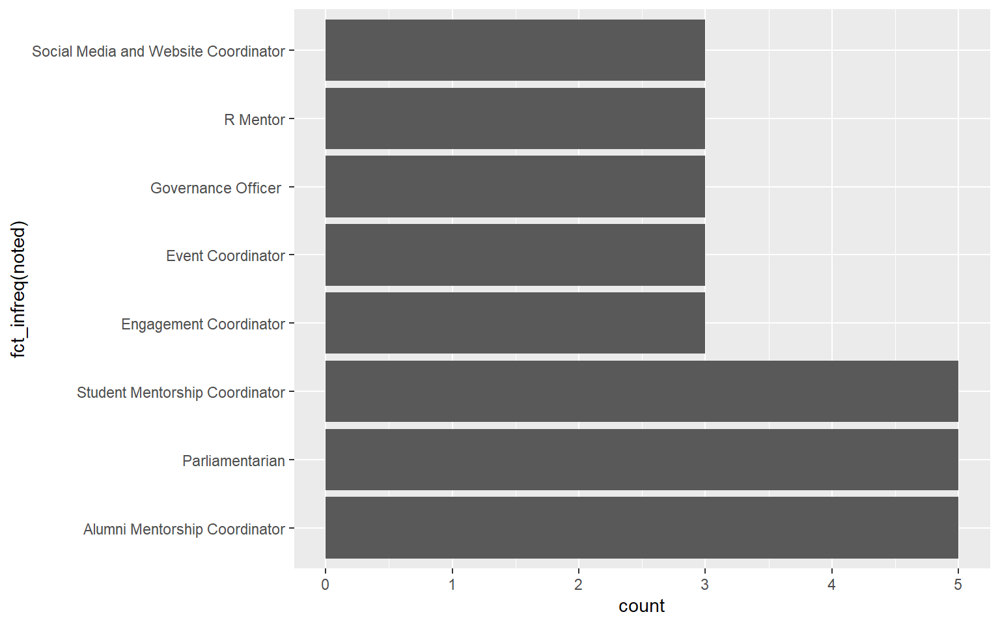
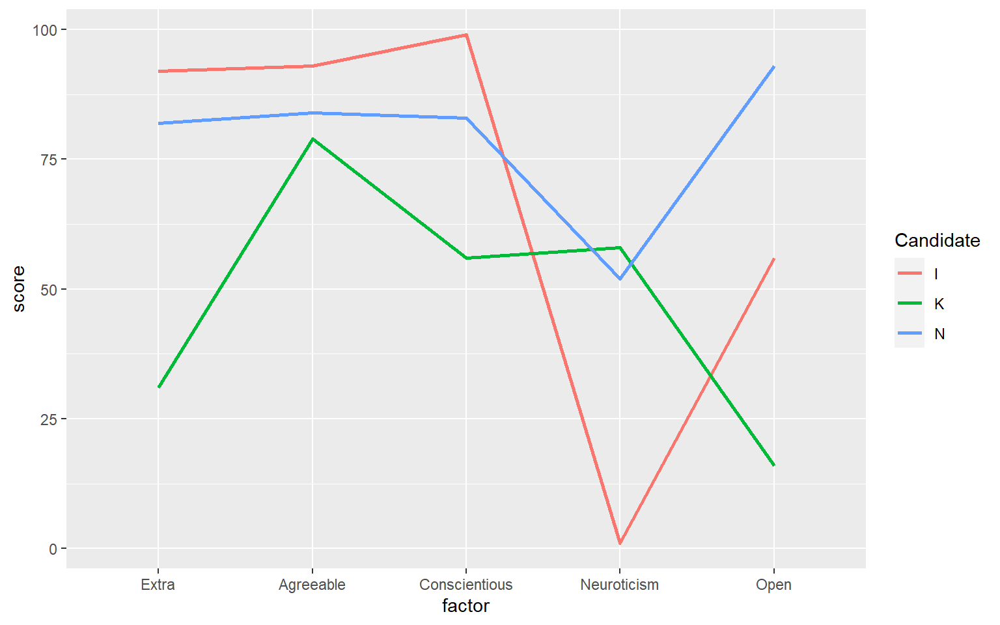
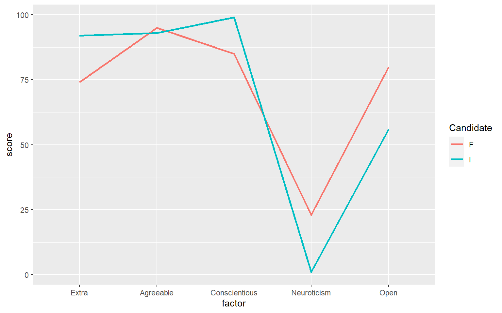
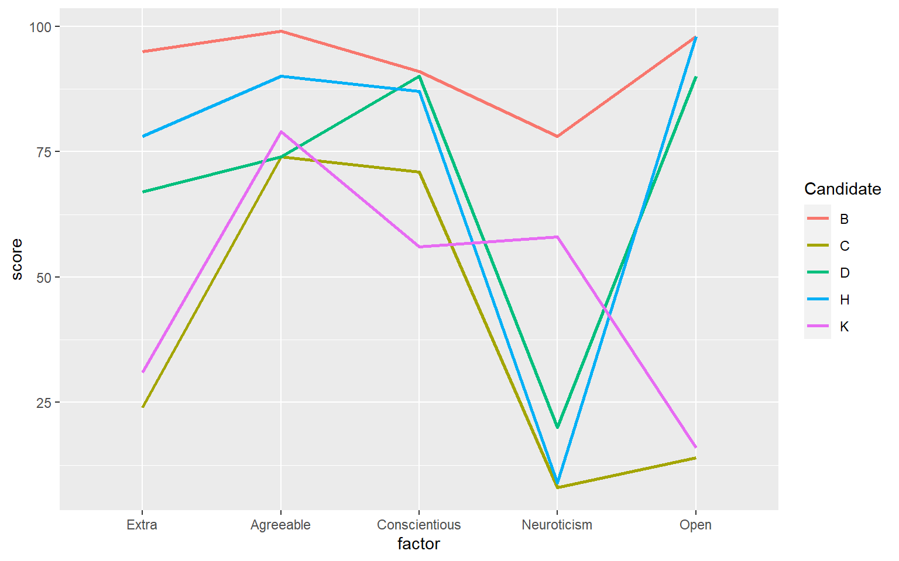
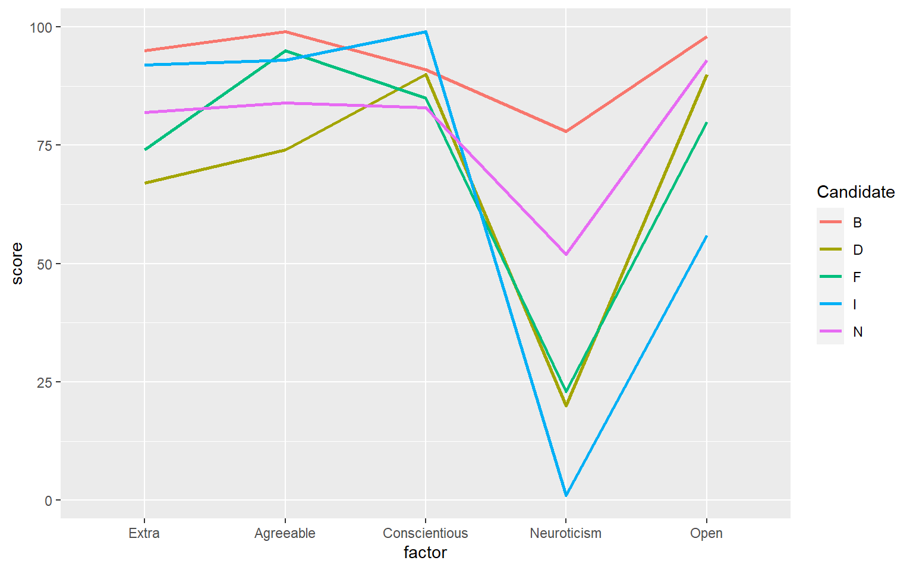
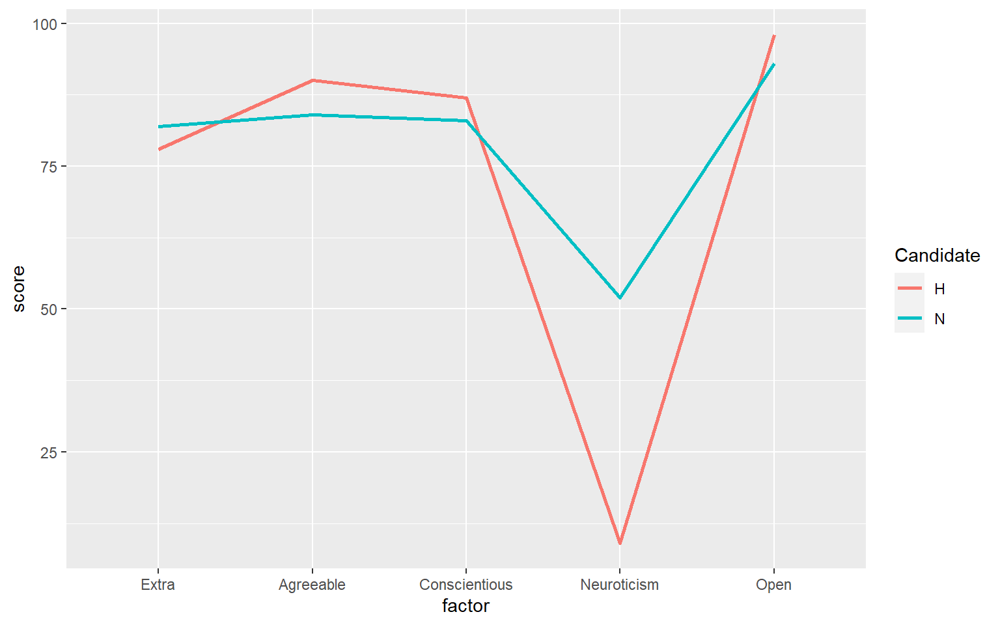
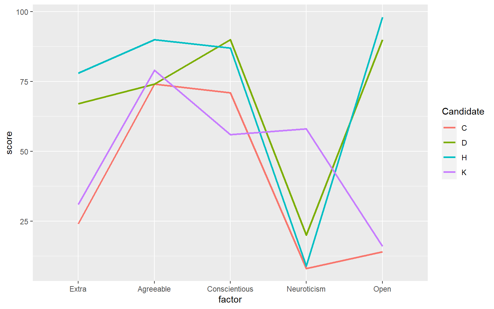
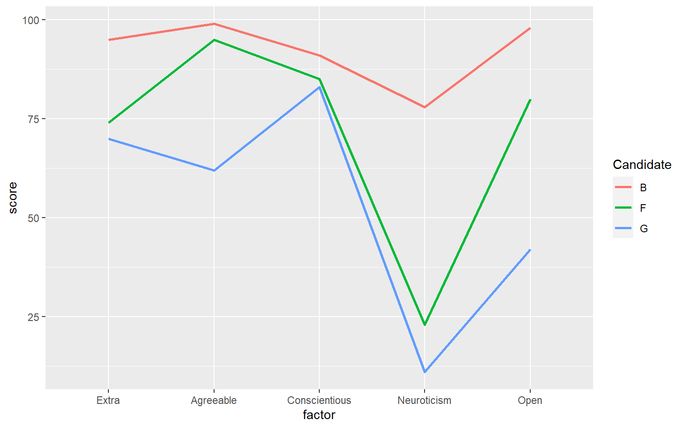
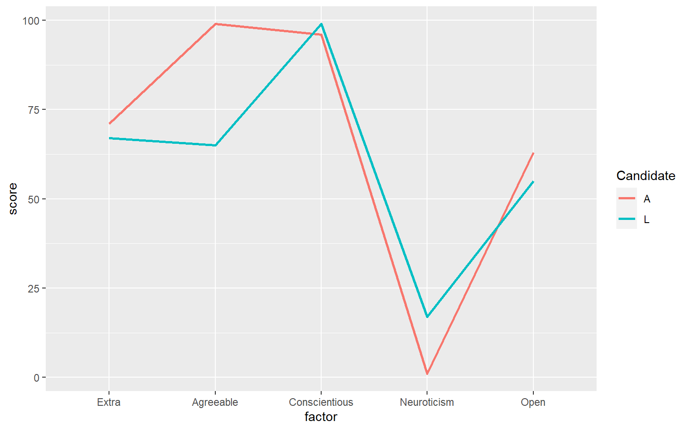

2021 Eagle I.O Member Selection

Eagle I.O Selection (2021)
This is a template for Eagle I.O member selection. As of 2021-05-16, we had 14 applicants with personality scores as well as targeted survey responses.
Role-based information (incumbents)
Current members and their expressed interest roles are:
| Candidate | Role | |
|---|---|---|
| 3 | A | Executive Consultant |
| 7 | E | Governance Officer |
| 14 | L | Executive Consultant |
| 15 | M | Student Mentorship Coordinator |
Role-based information (applicants)
| Candidate | Role1 | Role2 | Role3 | |
|---|---|---|---|---|
| 4 | B | Student Mentorship Coordinator | Alumni Mentorship Coordinator | R Mentor |
| 5 | C | Student Mentorship Coordinator | Social Media and Website Coordinator | Parliamentarian |
| 6 | D | Alumni Mentorship Coordinator | Student Mentorship Coordinator | Parliamentarian |
| 8 | F | Engagement Coordinator | R Mentor | Alumni Mentorship Coordinator |
| 9 | G | Social Media and Website Coordinator | R Mentor | Engagement Coordinator |
| 10 | H | Event Coordinator | Student Mentorship | Parliamentarian |
| 11 | I | Governance Officer | Alumni Mentorship Coordinator | Engagement Coordinator |
| 12 | J | Parliamentarian | Event coordinator | Social Media & Website coordinator |
| 13 | K | Student Mentorship Coordinator | Governance Officer | Parliamentarian |
| 16 | N | The primary role I wish to apply to is event coordinator. | Governance Officer. | Alumni Mentorship coordinator |
Role coverage (newbies)

| Candidate | Why do you want to join Eagle I.O? | |
|---|---|---|
| 4 | B | I love this program more than anything and Eagle I.O has done an incredible job at making the program better for everyone. I want to give back to the program by contributing to the great work that Eagle I.O does. That said, I also very much want to continue developing my professional skills in mentorship, project management, and data science, and Eagle I.O presents a fantastic opportunity to do so while I’m working on my Master’s. |
| 5 | C | I want to join Eagle I.O. because I think it would be a great starting point to developing the skills needed to excel in the field of I.O psychology. I also think it is a great way not only to learn, but to make meaningful connections between cohorts and faculty. I am very learning-oriented and am eager to take any opportunity to learn in general, but I’m excited to get some hands-on experience as well. |
| 6 | D | As someone interested in working in the applied sector but unsure where exactly, Eagle I.O. is the perfect place to learn about various realms within the field of I/O Psychology. I have strong ties to Montclair State University and I want strong ties in this program, and I believe Eagle I.O. would put me with ambitious, like-minded individuals with who I can share passions and ideas. I would also be remiss not to mention the networking opportunities, along with the chance to work alongside professionals in various sectors. |
| 8 | F |
I see Eagle I.O as a natural next-step in my ongoing preparation for a career in consulting. One of the deciding factors for my choice to attend my undergraduate school was the fact that it had a program, Organizational Studies, that was extremely similar to Eagle I.O. So too was my choice to go to MSU influenced by Eagle I.O. Membership in this group would give me the space to “wear many hatsâ€, continuously develop new skills, and assume new responsibilities. I will address these specifically in later sections, but on a more basic level, the sheer breadth of skills I will be able to hone is in and of itself one of its biggest selling points. Eagle I.O’s heavy emphasis on student mentorship is extremely appealing to me. As the youngest PhD student in the I.O program, I have been the beneficiary of an enormous degree of mentorship from my more experienced classmates. I am both deeply grateful for this support and committed to paying it forward to those who come after me. I have already begun to put this to work as the official R tutor for Dr. Kulas’s psychometrics class. I volunteered for this role for much the same reason I am currently applying to this program: my desire to leverage my existing skill in R to further hone my “soft skills” as a communicator and mentor. However, what started as a project to grow my skills quickly turned to a passion project as a discovered that I truly love to teach and mentor. Joining Eagle I.O would let me extend this experience beyond this semester for the full duration of my graduate school experience. Finally, I see this program as the ultimate opportunity to prove to myself and to others that “I have what it takes.†If there is anything that can give pursuing a PhD a run for its money in terms of difficulty, it’s consulting. If I can juggle the already steep responsibilities of Eagle I.O on top of my existing duties, then I will graduate this program with not only the skills of a consultant, but also with the confidence of one. |
| 9 | G |
Primarily want to join Eagle I.O to expand my skills in R. Also to expand my website design skills, professionalism, and communication skills. Desire to experience work that I/O companies are distributing. Enhance my resume with I/O related projects. |
| 10 | H |
I am interested in Eagle I.O. for two reasons: The first is my desire to work closely on projects that align with my current professional and educational interests. At the same time, I am hoping to be exposed to new topics and fields, which I can then develop a passion for. My current interests are based on my current exposures, and I want to make sure that my educational journey involves as much exposure as possible. Eagle I.O is an environment that I hope to learn in through both failures and success. The second reason is that I want to be involved with I.O psychology and Montclair in ways that I have not yet been able to. Whether this be working with new I.O. students, professors, or on projects that extend past Montclair’s campus. |
| 11 | I | I am interested in joining Eagle I.O because I would love to gain practical and applied learning experiences to develop skills aligned with my personal and professional goals. Eagle I.O seems like an excellent opportunity to collaborate within groups to strategize and execute a variety of internal and external I/O projects. I hope to gain experience in Eagle I.O that can help me develop skills and experience I can leverage to succeed post-graduation when looking for opportunities. Specifically, I hope to develop my understanding of and execution to deliver change management strategies while working underneath closely trusted professors and peers. I am currently developing the guest speaking event for Dr. Val’s Internship course where I recruited our speaker from my personal network and am ecstatic for the delivery of the event in April. I am enthusiastic about the opportunity to continue to demonstrate my ability to strategize and execute projects within our program through Eagle I.O. |
| 12 | J | I want to be involved with like-minded people. I want to grow as an individual, prepare for an IO career, and help guide the next class of students. |
| 13 | K | I want to be a part of Eagle I.O because of the opportunities it can offer me. Although still relatively new, it is clear that there is a lot to gain from being a member, regardless of one’s position. The mission and purpose of Eagle I.O is to provide practical experiences where the students can apply what they have been learning to both internal and external projects, and I am in need of exactly that type of opportunity. As of right now I do not have any experience that I can put on my resume outside of my undergraduate research. Being part of Eagle I.O would give me the chance to change that, to get my feet wet in the field of I.O, and equally important, it would give me the ability to help improve and enhance for others the very program that is preparing me for the future right now. |
| 16 | N | I primarily want to join Eagle IO to gain important knowledge and experiences that will help me to develop my skills for a future career in IO psychology. Eagle IO was one of the original reasons I chose to apply to MSU’s IO Psychology program. In the future, I plan to go into the applied field of IO psychology, likely consulting, and I have always seen Eagle IO as the ideal opportunity to apply many of the concepts I am learning in my courses to actual situations. Overall, I believe that the experiences Eagle IO would bring me would greatly aid me in developing the practical and applied skills necessary for a career in the applied field of IO psychology. |
Roles
The following slides present NEW applicants who indicated an interest within each role.
Governance officer
| Candidate | What Eagle I.O projects are you interested in? | What specific skills are you interested in developing as an Eagle I.O member? | |
|---|---|---|---|
| 11 | I | I am interested in both internal and external projects. The internal projects I am most interested in are change management, the engagement survey, and working to develop and refine the mentorship program. All of the external projects are of interest as I aspire to work as an external consultant. I have worked on internal projects before though I have yet to gain experience strategizing, developing, and executing external projects for organizations. | The specific skills I am hoping to develop are my ability to create and deliver assessments, work within change management, and working with outside clients to strategize and execute projects to create positive lasting change within and outside of our program as a representative of Eagle I.O. Additionally, I am hoping to develop my soft skills such as collaborating in a team environment, conscientiousness concerning meeting project needs and deadlines in a structured manner, as well as my ability to collaborate and work with outside stakeholders on our external projects. |
| 13 | K | I am particularly interested in the student mentorship project and the change management project. These two peak my interest because they are about shaping the program to best fit the students’ needs, the mentorship project by building a system to aid new students in adjusting to the program, and the change management project by developing and improving the group so that those in it can most benefit from what it has to offer. | I do not have specific skills in mind that I would like to develop through being a member of Eagle I.O, but I imagine through the group I would be able to improve my leadership skills, project management skills, team work and collaboration skills, time management skills, and hopefully overall professionalism. |
| 16 | N | I am interested in a variety of Eagle IO projects. Specifically, I find myself gravitating toward the external projects with gothamCulture and Naissance. I feel that these projects would give me vital experiences working alongside an organization on essential IO-related tasks. Additionally, these tasks would put me in a similar position to that of a consultant aiding an organization with a project. This type of experience fascinates me and is something I would cherish the opportunity to be a part of. Additionally, I am very interested in the change management project. I feel that this project would give me the opportunity to apply many of the concepts of a needs assessment (which I’ve learned from Dr. Bragger’s PM class) to the Eagle IO program. This project also requires great amounts of information-gathering, communication, and creativity, which are a few skills that I excel at and that I believe I would be able to utilize in this project. | As an Eagle IO member, a few specific skills I would hope to develop are communication, teamwork, problem-solving, and time management. While I have worked to develop some of these skills in the past, I feel that Eagle IO would be the best opportunity for me to develop these skills within a consulting and applied framework. Each of these skills are essential for a career in consulting. Consultants must be efficient and organized while communicating with others and must be able to quickly solve problems while considering things from all angles. While in Eagle IO, I would have the opportunity to collaborate with others in this program on different projects and could use these opportunities to develop my communication and teamwork skills. Then, when working on my individual projects, I could focus on working efficiently so as to develop my time management and problem-solving skills. |
Engagement officer
| Candidate | What Eagle I.O projects are you interested in? | What specific skills are you interested in developing as an Eagle I.O member? | |
|---|---|---|---|
| 8 | F |
Above all others, I am most interested in the ongoing Engagement Survey project. This project represents a new frontier in my academic experience. As an undergraduate, my research was confined to “typical” research formats: experimental, correlational and quasi-experimental studies. These projects allowed me to put existing theories and scales to use, but it never let me create something new. My choice to pursue a PhD over a master’s degree boiled down to the fact that I do not just want to learn, I also want to create knowledge. Working on the Engagement Survey would throw me into the deep end of psychological research. Not only would it force me to rapidly grow my knowledge in the scale construction and validation process, it would also put my skills in R to the test. In other words, it represents a chance to develop from competency to mastery. I am also quite interested in the Alumni Mentorship Project, albeit for different reasons. Admittedly, this interest was unexpected and owes entirely to my involvement as a co-coordinator for MSU’s first Alumni Night. What began with a mere interest in proving my event-planning and communication skills ended with the discovery that I truly love bringing people together. Despite the robustness of our program’s alumni network, hosting the first ever alumni night truly hit home for me how much more work can be done to nurture the connections between our students and alumni. |
I will divide these between technical and “soft” skills. Technical skills: R Advanced statistical and psychometric methods, including factor analysis, SEM, and machine learning Python Excel Soft skills: External and internal consulting Project management Assertiveness Stakeholder communication/managing expectations Networking Mentorship Conscientiousness/industriousness Selling myself and interview skills |
| 11 | I | I am interested in both internal and external projects. The internal projects I am most interested in are change management, the engagement survey, and working to develop and refine the mentorship program. All of the external projects are of interest as I aspire to work as an external consultant. I have worked on internal projects before though I have yet to gain experience strategizing, developing, and executing external projects for organizations. | The specific skills I am hoping to develop are my ability to create and deliver assessments, work within change management, and working with outside clients to strategize and execute projects to create positive lasting change within and outside of our program as a representative of Eagle I.O. Additionally, I am hoping to develop my soft skills such as collaborating in a team environment, conscientiousness concerning meeting project needs and deadlines in a structured manner, as well as my ability to collaborate and work with outside stakeholders on our external projects. |
Student mentorship coordinator
| Candidate | What Eagle I.O projects are you interested in? | What specific skills are you interested in developing as an Eagle I.O member? | |
|---|---|---|---|
| 4 | B | The student mentorship program, the alumni mentorship program, and the engagement survey. I am also interested in helping out with the Naissance project to further develop my R skills. | Mentorship, project management, and R. |
| 5 | C | I’m most interested in the Charlie Academy project because I am very interested in leadership. I am also interested in the Workforce Lifecyle project because I haven’t learned much about selection yet, but would love to learn more about it. | I am mostly interested in further developing my data analysis skills. I am also interested in developing networking skills. |
| 6 | D | I am very interested in both internal mentorship projects. The subject of mentorship fascinates me, and I would be interested to see how those relationships can best be cultivated within this program. Initially, I’m interested in the Charlie Academy project, as I have just started working for the founder and will be getting to know the organization. I also am interested in the gothamCulture project and have recently started networking with the founder, Dr. Cancialosi. | While I do feel comfortable with my current leadership and professional skills, I know I do have to get more experience in data analysis. As someone who has always struggled in mathematics, the idea of working with data still makes me hesitant, but I’ve been learning from my two labs. I think Eagle I.O. would help me further hone this skill, as well as granting me a safe space to make mistakes and ask for help. |
| 10 | H |
I am most interested in the mentorship project. From personal experience, having a mentor has drastically improved my experience at MSU, and that in itself has made me excited to become involved in the mentorship project. Whether it be as mentor, or in the mentorship role, I have a great deal of ideas that I would like to contribute. The mentorship program already has an impact on student development and engagement; but I hope to be able to enhance this program beyond that. Mentors have the potential to be life long companions, beyond the scope of graduate school - so let’s make that happen. All of the projects that are currently happening are extremely interesting; but I look forward to starting my own projects with Eagle I.O.. There is a lot of potential for opportunity when you have the right amount of support, which is what Eagle I.O. seems to do for its members. My cohort is full of ambition, and the opportunities are endless. In the following year I look forward to beginning new projects that the following cohort will be able to carry on; leaving an impact on both Montclair and Eagle I.O. |
Change management Leadership Consciousness Data analysis Problem Solving Teamwork My ability to motivate others Professionalism |
| 13 | K | I am particularly interested in the student mentorship project and the change management project. These two peak my interest because they are about shaping the program to best fit the students’ needs, the mentorship project by building a system to aid new students in adjusting to the program, and the change management project by developing and improving the group so that those in it can most benefit from what it has to offer. | I do not have specific skills in mind that I would like to develop through being a member of Eagle I.O, but I imagine through the group I would be able to improve my leadership skills, project management skills, team work and collaboration skills, time management skills, and hopefully overall professionalism. |
| Candidate | MSU general events | MSU I/o events | Eagle I.O events | Metro events | SIOP | Mentorship events | Other | Other description | |
|---|---|---|---|---|---|---|---|---|---|
| 4 | B | 1 | 4 | 2 | 1 | ||||
| 5 | C | 1 | 2 | 4 | 1 | ||||
| 6 | D | 2 | 4 | 6 | 1 | 2 | |||
| 10 | H | 8 | 5 | 3 | 1 | 4 | |||
| 13 | K | 1 | 3 | 1 | 1 | 1 |
Alumni mentorship coordinator
| Candidate | What Eagle I.O projects are you interested in? | What specific skills are you interested in developing as an Eagle I.O member? | |
|---|---|---|---|
| 4 | B | The student mentorship program, the alumni mentorship program, and the engagement survey. I am also interested in helping out with the Naissance project to further develop my R skills. | Mentorship, project management, and R. |
| 6 | D | I am very interested in both internal mentorship projects. The subject of mentorship fascinates me, and I would be interested to see how those relationships can best be cultivated within this program. Initially, I’m interested in the Charlie Academy project, as I have just started working for the founder and will be getting to know the organization. I also am interested in the gothamCulture project and have recently started networking with the founder, Dr. Cancialosi. | While I do feel comfortable with my current leadership and professional skills, I know I do have to get more experience in data analysis. As someone who has always struggled in mathematics, the idea of working with data still makes me hesitant, but I’ve been learning from my two labs. I think Eagle I.O. would help me further hone this skill, as well as granting me a safe space to make mistakes and ask for help. |
| 8 | F |
Above all others, I am most interested in the ongoing Engagement Survey project. This project represents a new frontier in my academic experience. As an undergraduate, my research was confined to “typical” research formats: experimental, correlational and quasi-experimental studies. These projects allowed me to put existing theories and scales to use, but it never let me create something new. My choice to pursue a PhD over a master’s degree boiled down to the fact that I do not just want to learn, I also want to create knowledge. Working on the Engagement Survey would throw me into the deep end of psychological research. Not only would it force me to rapidly grow my knowledge in the scale construction and validation process, it would also put my skills in R to the test. In other words, it represents a chance to develop from competency to mastery. I am also quite interested in the Alumni Mentorship Project, albeit for different reasons. Admittedly, this interest was unexpected and owes entirely to my involvement as a co-coordinator for MSU’s first Alumni Night. What began with a mere interest in proving my event-planning and communication skills ended with the discovery that I truly love bringing people together. Despite the robustness of our program’s alumni network, hosting the first ever alumni night truly hit home for me how much more work can be done to nurture the connections between our students and alumni. |
I will divide these between technical and “soft” skills. Technical skills: R Advanced statistical and psychometric methods, including factor analysis, SEM, and machine learning Python Excel Soft skills: External and internal consulting Project management Assertiveness Stakeholder communication/managing expectations Networking Mentorship Conscientiousness/industriousness Selling myself and interview skills |
| 11 | I | I am interested in both internal and external projects. The internal projects I am most interested in are change management, the engagement survey, and working to develop and refine the mentorship program. All of the external projects are of interest as I aspire to work as an external consultant. I have worked on internal projects before though I have yet to gain experience strategizing, developing, and executing external projects for organizations. | The specific skills I am hoping to develop are my ability to create and deliver assessments, work within change management, and working with outside clients to strategize and execute projects to create positive lasting change within and outside of our program as a representative of Eagle I.O. Additionally, I am hoping to develop my soft skills such as collaborating in a team environment, conscientiousness concerning meeting project needs and deadlines in a structured manner, as well as my ability to collaborate and work with outside stakeholders on our external projects. |
| 16 | N | I am interested in a variety of Eagle IO projects. Specifically, I find myself gravitating toward the external projects with gothamCulture and Naissance. I feel that these projects would give me vital experiences working alongside an organization on essential IO-related tasks. Additionally, these tasks would put me in a similar position to that of a consultant aiding an organization with a project. This type of experience fascinates me and is something I would cherish the opportunity to be a part of. Additionally, I am very interested in the change management project. I feel that this project would give me the opportunity to apply many of the concepts of a needs assessment (which I’ve learned from Dr. Bragger’s PM class) to the Eagle IO program. This project also requires great amounts of information-gathering, communication, and creativity, which are a few skills that I excel at and that I believe I would be able to utilize in this project. | As an Eagle IO member, a few specific skills I would hope to develop are communication, teamwork, problem-solving, and time management. While I have worked to develop some of these skills in the past, I feel that Eagle IO would be the best opportunity for me to develop these skills within a consulting and applied framework. Each of these skills are essential for a career in consulting. Consultants must be efficient and organized while communicating with others and must be able to quickly solve problems while considering things from all angles. While in Eagle IO, I would have the opportunity to collaborate with others in this program on different projects and could use these opportunities to develop my communication and teamwork skills. Then, when working on my individual projects, I could focus on working efficiently so as to develop my time management and problem-solving skills. |
| Candidate | MSU general events | MSU I/o events | Eagle I.O events | Metro events | SIOP | Mentorship events | Other | Other description | |
|---|---|---|---|---|---|---|---|---|---|
| 4 | B | 1 | 4 | 2 | 1 | ||||
| 6 | D | 2 | 4 | 6 | 1 | 2 | |||
| 8 | F | 2 | 7 | 4 | 4 | 1 | 2 | ||
| 11 | I | 5 | 3 | 5 | 5 | 6 | N/A | ||
| 16 | N | 3 | 3 | 4 | 1 | 3 |
Event coordinator
| Candidate | What Eagle I.O projects are you interested in? | What specific skills are you interested in developing as an Eagle I.O member? | |
|---|---|---|---|
| 10 | H |
I am most interested in the mentorship project. From personal experience, having a mentor has drastically improved my experience at MSU, and that in itself has made me excited to become involved in the mentorship project. Whether it be as mentor, or in the mentorship role, I have a great deal of ideas that I would like to contribute. The mentorship program already has an impact on student development and engagement; but I hope to be able to enhance this program beyond that. Mentors have the potential to be life long companions, beyond the scope of graduate school - so let’s make that happen. All of the projects that are currently happening are extremely interesting; but I look forward to starting my own projects with Eagle I.O.. There is a lot of potential for opportunity when you have the right amount of support, which is what Eagle I.O. seems to do for its members. My cohort is full of ambition, and the opportunities are endless. In the following year I look forward to beginning new projects that the following cohort will be able to carry on; leaving an impact on both Montclair and Eagle I.O. |
Change management Leadership Consciousness Data analysis Problem Solving Teamwork My ability to motivate others Professionalism |
| 16 | N | I am interested in a variety of Eagle IO projects. Specifically, I find myself gravitating toward the external projects with gothamCulture and Naissance. I feel that these projects would give me vital experiences working alongside an organization on essential IO-related tasks. Additionally, these tasks would put me in a similar position to that of a consultant aiding an organization with a project. This type of experience fascinates me and is something I would cherish the opportunity to be a part of. Additionally, I am very interested in the change management project. I feel that this project would give me the opportunity to apply many of the concepts of a needs assessment (which I’ve learned from Dr. Bragger’s PM class) to the Eagle IO program. This project also requires great amounts of information-gathering, communication, and creativity, which are a few skills that I excel at and that I believe I would be able to utilize in this project. | As an Eagle IO member, a few specific skills I would hope to develop are communication, teamwork, problem-solving, and time management. While I have worked to develop some of these skills in the past, I feel that Eagle IO would be the best opportunity for me to develop these skills within a consulting and applied framework. Each of these skills are essential for a career in consulting. Consultants must be efficient and organized while communicating with others and must be able to quickly solve problems while considering things from all angles. While in Eagle IO, I would have the opportunity to collaborate with others in this program on different projects and could use these opportunities to develop my communication and teamwork skills. Then, when working on my individual projects, I could focus on working efficiently so as to develop my time management and problem-solving skills. |
| Candidate | MSU general events | MSU I/o events | Eagle I.O events | Metro events | SIOP | Mentorship events | Other | Other description | |
|---|---|---|---|---|---|---|---|---|---|
| 10 | H | 8 | 5 | 3 | 1 | 4 | |||
| 16 | N | 3 | 3 | 4 | 1 | 3 |
Parliamentarian
| Candidate | What Eagle I.O projects are you interested in? | What specific skills are you interested in developing as an Eagle I.O member? | |
|---|---|---|---|
| 5 | C | I’m most interested in the Charlie Academy project because I am very interested in leadership. I am also interested in the Workforce Lifecyle project because I haven’t learned much about selection yet, but would love to learn more about it. | I am mostly interested in further developing my data analysis skills. I am also interested in developing networking skills. |
| 6 | D | I am very interested in both internal mentorship projects. The subject of mentorship fascinates me, and I would be interested to see how those relationships can best be cultivated within this program. Initially, I’m interested in the Charlie Academy project, as I have just started working for the founder and will be getting to know the organization. I also am interested in the gothamCulture project and have recently started networking with the founder, Dr. Cancialosi. | While I do feel comfortable with my current leadership and professional skills, I know I do have to get more experience in data analysis. As someone who has always struggled in mathematics, the idea of working with data still makes me hesitant, but I’ve been learning from my two labs. I think Eagle I.O. would help me further hone this skill, as well as granting me a safe space to make mistakes and ask for help. |
| 10 | H |
I am most interested in the mentorship project. From personal experience, having a mentor has drastically improved my experience at MSU, and that in itself has made me excited to become involved in the mentorship project. Whether it be as mentor, or in the mentorship role, I have a great deal of ideas that I would like to contribute. The mentorship program already has an impact on student development and engagement; but I hope to be able to enhance this program beyond that. Mentors have the potential to be life long companions, beyond the scope of graduate school - so let’s make that happen. All of the projects that are currently happening are extremely interesting; but I look forward to starting my own projects with Eagle I.O.. There is a lot of potential for opportunity when you have the right amount of support, which is what Eagle I.O. seems to do for its members. My cohort is full of ambition, and the opportunities are endless. In the following year I look forward to beginning new projects that the following cohort will be able to carry on; leaving an impact on both Montclair and Eagle I.O. |
Change management Leadership Consciousness Data analysis Problem Solving Teamwork My ability to motivate others Professionalism |
| 13 | K | I am particularly interested in the student mentorship project and the change management project. These two peak my interest because they are about shaping the program to best fit the students’ needs, the mentorship project by building a system to aid new students in adjusting to the program, and the change management project by developing and improving the group so that those in it can most benefit from what it has to offer. | I do not have specific skills in mind that I would like to develop through being a member of Eagle I.O, but I imagine through the group I would be able to improve my leadership skills, project management skills, team work and collaboration skills, time management skills, and hopefully overall professionalism. |
R mentor
| Candidate | What Eagle I.O projects are you interested in? | What specific skills are you interested in developing as an Eagle I.O member? | |
|---|---|---|---|
| 4 | B | The student mentorship program, the alumni mentorship program, and the engagement survey. I am also interested in helping out with the Naissance project to further develop my R skills. | Mentorship, project management, and R. |
| 8 | F |
Above all others, I am most interested in the ongoing Engagement Survey project. This project represents a new frontier in my academic experience. As an undergraduate, my research was confined to “typical” research formats: experimental, correlational and quasi-experimental studies. These projects allowed me to put existing theories and scales to use, but it never let me create something new. My choice to pursue a PhD over a master’s degree boiled down to the fact that I do not just want to learn, I also want to create knowledge. Working on the Engagement Survey would throw me into the deep end of psychological research. Not only would it force me to rapidly grow my knowledge in the scale construction and validation process, it would also put my skills in R to the test. In other words, it represents a chance to develop from competency to mastery. I am also quite interested in the Alumni Mentorship Project, albeit for different reasons. Admittedly, this interest was unexpected and owes entirely to my involvement as a co-coordinator for MSU’s first Alumni Night. What began with a mere interest in proving my event-planning and communication skills ended with the discovery that I truly love bringing people together. Despite the robustness of our program’s alumni network, hosting the first ever alumni night truly hit home for me how much more work can be done to nurture the connections between our students and alumni. |
I will divide these between technical and “soft” skills. Technical skills: R Advanced statistical and psychometric methods, including factor analysis, SEM, and machine learning Python Excel Soft skills: External and internal consulting Project management Assertiveness Stakeholder communication/managing expectations Networking Mentorship Conscientiousness/industriousness Selling myself and interview skills |
| 9 | G |
gothamCulture, Workforce Lifecycle Thought the job recruitment project Renata is working on is very relevant. Noel mentioned he was developing a project for gothamCulture, I said yes to being a test participant. |
R coding. Website design/ social presence. Survey analytics. I/O Skills. Open-minded. |
Executive consultant

Personality scores
…just for fun! EVERYONE!!!!!!!!!

Recommendations
The following is the recommendation regarding Eagle I.O membership 2021-2022:
| Role | Prospective.Member |
|---|---|
| Social Media and Website | Brooke Steinhour |
| R Mentor | Pasquale Tosto |
| Governance | Paulina Wiedmann |
| Event Coordinator | Matthew J Giuliano & Isabella Arroyo |
| Engagement Coordinator | Morgan Russell |
| Student Mentorship | Ryan Lentz & Nikita Williams |
| Parliamentarian | Ileana Androvich |
| Executive Consultant | Renata & Catrina Notari |
| Alumni Mentorship | Dana Sobel |
Social media and website coordinator